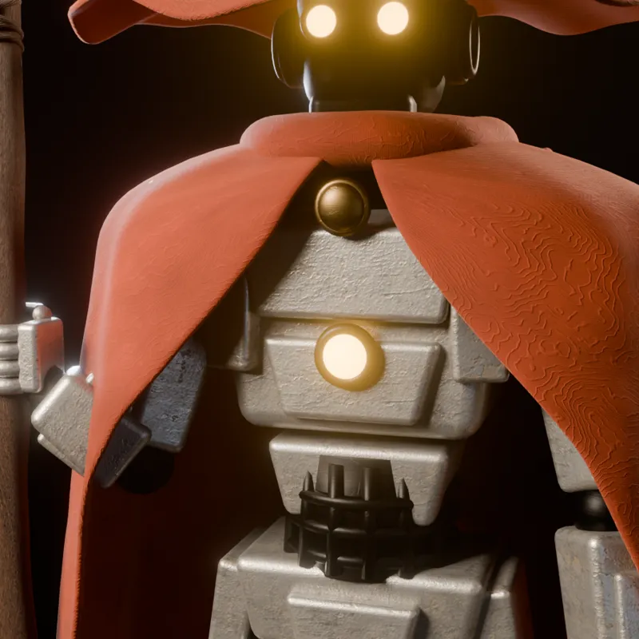
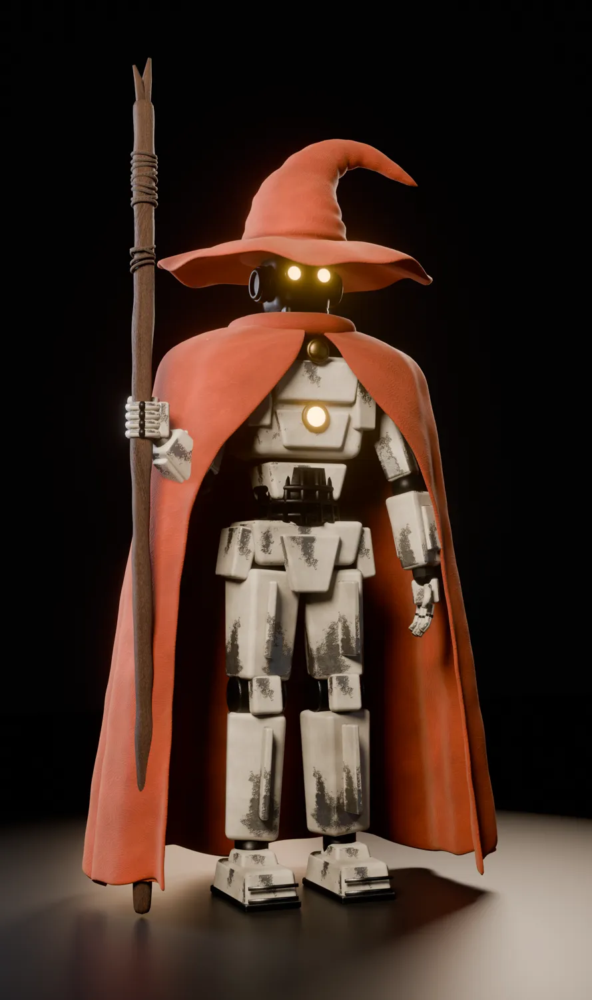

Rotinas que já sabemos tirar das mãos do seu time.
Começamos pela tarefa que mais custa para você. Estes são exemplos do que já colocamos para rodar.
O número de ontem, às 8 da manhã
Comércio, e-commerce e quem tem painel
Ele abre o painel que a empresa já usa, resume o dia anterior e manda no WhatsApp do dono antes de qualquer um chegar.
"todo dia às 8h, abre o painel, resume o de ontem e me manda"
Confirma o horário na véspera
Clínica, salão, barbearia e oficina
Toda tarde ele confirma cada horário do dia seguinte. Cada falta evitada é uma cadeira que volta a faturar.
O lead que não espera até segunda
Imobiliária, corretora e quem vive de lead quente
Formulário preenchido às 23h de sábado? Ele qualifica, registra no CRM e já responde.
O follow-up que o vendedor esquece
Time comercial com funil no CRM
Negócio parado há dias vira lembrete para o vendedor ou uma mensagem de reaquecimento.
O extrato que já chega conciliado
Quem recebe por PIX, cartão e boleto
Ele cruza o que entrou com o que deveria ter entrado e mostra só a diferença.
O concorrente mudou o preço
E-commerce, distribuidora e loja
Ele acompanha as páginas dos concorrentes e só avisa quando o preço muda. Ninguém precisa conferir quinze abas por dia.

Sua rotina não está aqui? A gente desenha junto no diagnóstico.Agendar diagnóstico
Cinco frentes, o mesmo método.
IA dentro do processo e resultado medido.
O processo que hoje depende de alguém lembrar passa a rodar sozinho.
Entramos na sua operação, desenhamos o processo e identificamos o que pode ser automatizado. Trocamos as etapas manuais por automações e agentes de IA, ligados às ferramentas que você já usa.
Começamos por atendimento, financeiro e operação, onde o retorno aparece primeiro
Para clínicas, lojas, escritórios e toda operação com tarefa que se repete todo dia
RPA e orquestração de agentes de IA
Integração com os sistemas que você já usa
n8nLangChainLangflowLangSmith
O cliente que chama recebe resposta, mesmo de madrugada.
Integramos o CRM que você já usa e montamos o funil de vendas com agentes que respondem, qualificam e lembram. Os agentes aprendem com o padrão dos seus dados.
Resposta imediata a quem preencheu o formulário
Pedido de avaliação depois do atendimento
Lembrete do orçamento parado no funil
Campanhas em Meta, Google, LinkedIn, TikTok e YouTube Ads, e-mail e chatbot de vendas
Sua equipe usando IA com critério.
Para empresas em transformação digital. Criamos rituais de mentoria para o time usar ChatGPT, Gemini, Claude e agentes de IA nas tarefas reais de cada área.
Rituais de mentoria com o time
IA aplicada às tarefas reais de cada área
Boas práticas de ética, compliance e LGPD
Segurança no uso de IA
Conteúdo toda semana, sem você parar para gravar.
Uma fábrica de conteúdo operada por agentes de IA. Eles buscam o assunto do seu setor, escrevem carrosséis e enquetes e produzem vídeos com um avatar de IA ou com a sua própria imagem.
Pauta a partir do que acontece no seu setor
Carrosséis e enquetes prontos para aprovação
Vídeos com avatar de IA ou com a sua imagem
Sem gravações cansativas
A ideia testada no mercado antes do investimento grande.
Para quem quer lançar um produto ou abrir a própria startup sem grandes custos. Com o método Lean Inception e desenvolvimento low-code e no-code, colocamos a primeira versão na frente de clientes reais.
Lean Inception com o seu time
Definição do escopo mínimo
Desenvolvimento low-code e no-code
Primeira versão na frente de clientes reais
Em qualquer frente, o número que prova o resultado é combinado antes, e você vê como o fluxo funciona antes de aprovar. Nada fica numa caixa-preta.

A WizzyBots trabalha do lado oposto.
Cada motivo que travou os projetos do estudo virou uma etapa do nosso método.
Começamos pela tarefa que mais custa
Mapeamos a operação com você e escolhemos a primeira tarefa pelo quanto ela custa hoje, não pela ferramenta da moda.
Diagnóstico das oportunidades
Colocamos a IA dentro do processo
Ela trabalha ligada aos seus documentos e sistemas. Por isso conhece a empresa e aprende com quem usa.
Nada de IA solta, fora do processo
Combinamos antes o número que prova o resultado
Antes de ligar, definimos juntos o indicador que vai mostrar se a automação se pagou.
Resultado medido, não suposto
Ficamos depois de ligar
Acompanhamos e ajustamos até a rotina se pagar. O projeto não termina no piloto.
O piloto vira rotina
Bastidor de um projeto
A IA que aprende com quem usa.
Uma organização recebia todo dia as mesmas perguntas sobre benefícios, políticas e processos. Colocamos uma assistente de IA dentro do chat que a equipe já usava. Ela consulta os documentos oficiais antes de responder e, no fim, pergunta se resolveu.
Cada "não resolveu" aponta o documento que falta ou a regra que confunde. É assim que a IA aprende com o uso, o ponto em que a maioria dos projetos para.
Alguém da equipe pergunta no chat que já usa
A assistente consulta os documentos oficiais e responde
No fim, ela pergunta: isso resolveu?
Cada "não" aponta o documento que falta ou a regra que confunde
A base é corrigida e a próxima resposta sai melhor.
Wyzzard + Bots. Mago e robô, de propósito.
A WizzyBots tira das mãos das pessoas as tarefas repetitivas e mecânicas e coloca nas mãos de agentes de IA. Assim o time volta a gastar tempo só com o que exige julgamento humano.
Fundada por Chris Berenguer, que hoje também presta consultoria de IA para grandes organizações do terceiro setor.
A tecnologia importa menos que resolver o problema certo com a ferramenta certa. Sem correr atrás de hype.
A ferramenta certa para cada caso.
Escolhemos a stack pelo problema, não pela moda. E integramos com o que a sua empresa já usa.
O seu pode estar nos outros 5%.
No diagnóstico escolhemos a primeira tarefa e o número que vai provar que ela se pagou.